RStudio
RStudio es una entorno de desarrollo integrado (IDE) que se emplea de forma más usual, puesto que es gratuito, de código abierto, con un editor incorporado, funciona en todas las plataformas y ofrece muchas ventajas, como la integración de control de versiones y gestión de proyectos. Este IDE se puede obtener desde aquí.
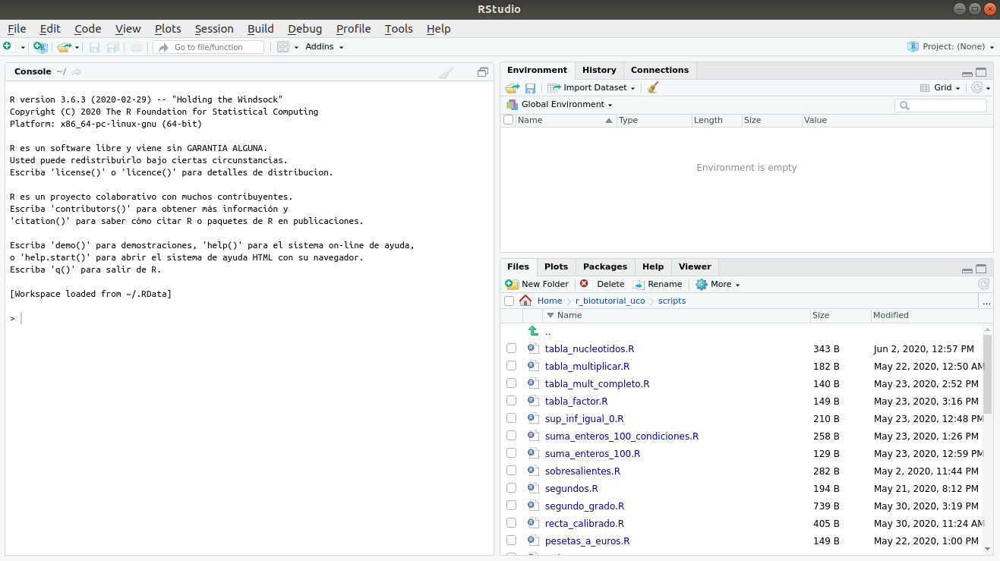
Herramientas¶
La interfaz, como se puede observar en la imagen anterior, se compone de un diseño básico que cuando es abierto muestra inicialmente los tres paneles siguientes:
-
La consola interactiva de R: situada a la izquierda, permite a los usuarios dar instrucciones mediante comandos de R a algún programa informático por medio de una línea de texto.
-
Ambiente e historial: localizado en la esquina superior derecha.
- Environment incluye las opciones de abrir, guardar e importar el conjunto de datos con los que se podrían trabajar; buscar y limpiar objetos del área de trabajo, es decir, eliminar las variables definidas en la sesión actual; muestra la información de los objetos como lista o cuadrícula (más detallada); se puede seleccionar la opción global environment, para visualizar los objetos, o package, para consultar funciones.
- History ofrece el conjunto de órdenes que se han llevado a cabo. Éstas pueden ser abiertas de otra sesión o de una nueva, cuyas modificaciones pueden ser salvadas; las opciones To Console y To Source permiten enviar las líneas seleccionadas a la consola o al editor, respectivamente; el símbolo de escoba para eliminar las órdenes y el buscador para encontrar aquella que se precise. 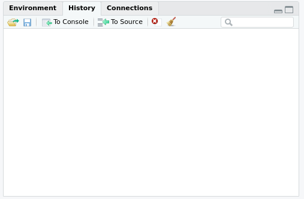
-
Barra de herramientas Files/Plots/Packages/Help/Viewer: La solapa Files permite crear carpetas (New Folder) y muestra la carpeta donde nos encontramos y su contenido, el cual puede ser eliminado o renombrado (Delete y Rename), al igual que se puede copiar o mover, e incluso, definir un nuevo directorio (More). La solapa Plots muestra los gráficos que se van generando y ofrece la posibilidad de eliminarlo y otras para salvarlo (Export). La solapa Packages ofrece la posibilidad de cargar o instalar la librería deseada, cuya búsqueda se facilita con un buscador, si se conoce previamente, o mediante la descripción. Además, el hacer click en el nombre del paquete, redirecciona a la solapa Help, donde se amplia la información de una forma más detallada, a la cual se puede acceder también mediante el buscador de la propia solapa o al solicitar la ayuda desde la consola mediante la función
help(""), o bien?función. Por último, la solapa Viewer se puede emplear para visualizar gráficos procedentes de software específico, páginas web u objetos web locales.
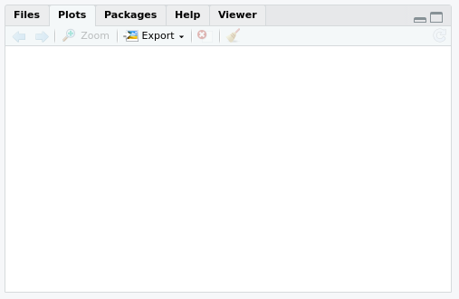
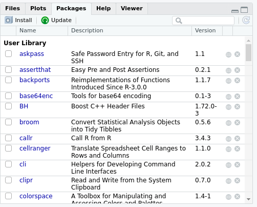
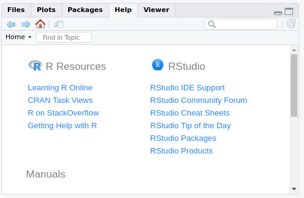
Por otro lado, RStudio contiene otro tipo de barras de herramientas con diferentes posibilidades.
-
Barra de herramientas general: incluye las opciones de crear un nuevo archivo, abrir uno ya creado, guardar el fichero actual o todos los ficheros abiertos, imprimir, el cuadro de texto Go to file/function; el icono de paneles que permite configurar a estos, y el botón Addins. Además, en el extremo derecho se encuentra la opción de abrir un nuevo proyecto, cerrarlo o seleccionar aquel sobre el que se vaya a trabajar.
-
Barra de herramientas del archivo seleccionado: dirigida a los ficheros abiertos, se sitúa justamente encima del panel desplegado cuando se abre un fichero. Las opciones que ofrece son el cambio de fichero de trabajo, mostrar el fichero en una ventana independiente, guardar o ejecutar el script.
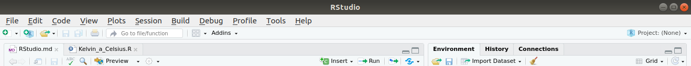
Otra barra de herramientas fundamental es la barra de menús situada en la parte superior de la interfaz. Los diferentes menús que la componen ofrecen una amplia variedad de herramientas para realizar con RStudio:
- File: permite crear nuevos ficheros de distintos tipos, como R Script, Text File, etc, o abrirlos, al igual que con proyectos. También ofrece la posibilidad de importar conjuntos de datos, guardar ficheros, renombrarlos, observar el borrador o publicarlo.
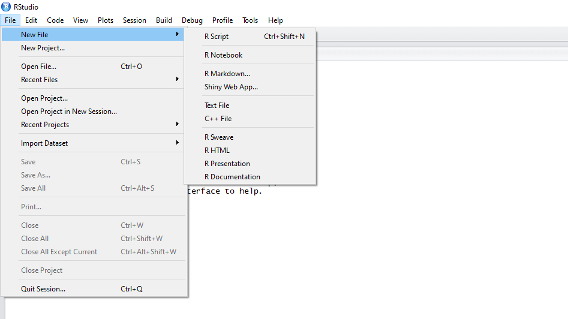
- Edit: incluye las opciones generales de copiar, cortar, pegar, deshacer, rehacer, buscar, limpiar, etc.
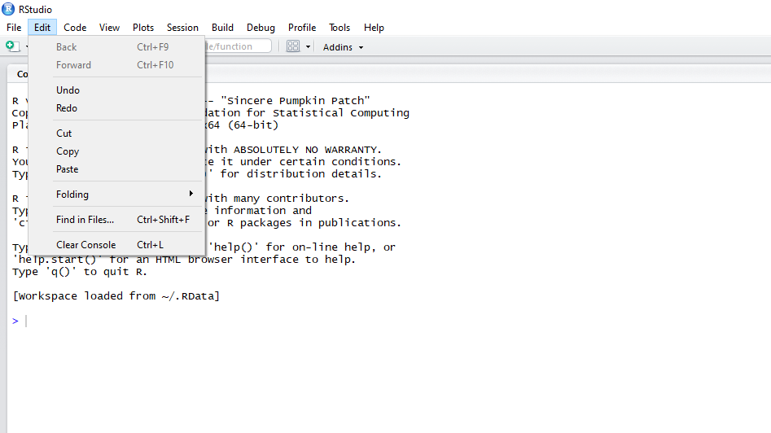
- Code: dirigido a la programación. Es de gran ayuda para ficheros con mucho código, de forma que se pueda, entre otras cosas, extraer o ejecutar partes específicas.
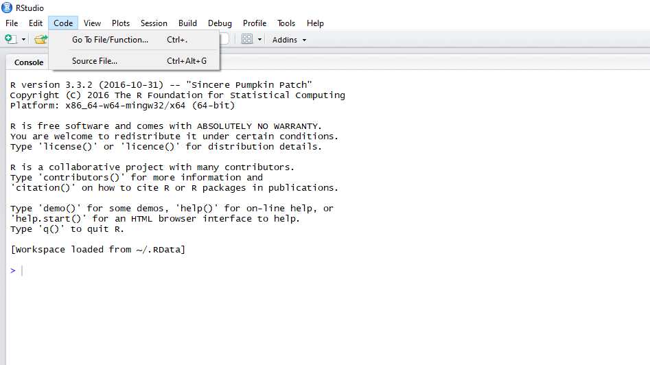
- View: orientado a la configuración del entorno, activando o desactivando ciertas opciones que ofrece.
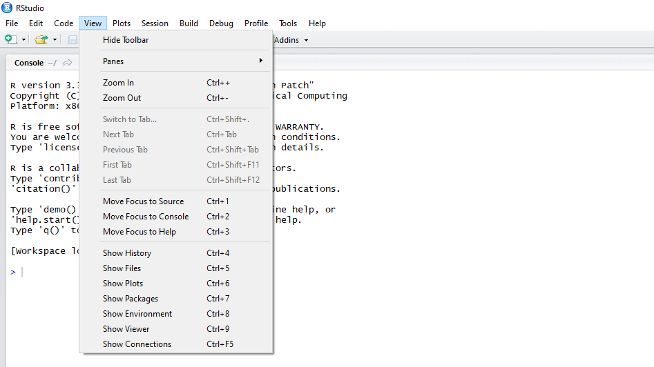
- Plots: expone distintas acciones a realizar para gráficos, como guardarlo, eliminarlo o navegar entre los distintos gráficos abiertos.
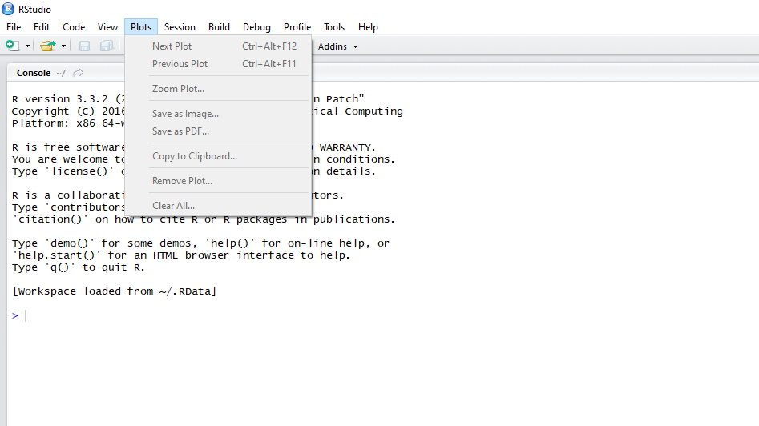
- Session: permite abrir o cerrar sesión, ambiente e historial.
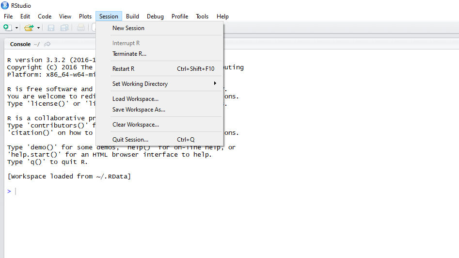
- Build: centrado en la construcción de proyectos.
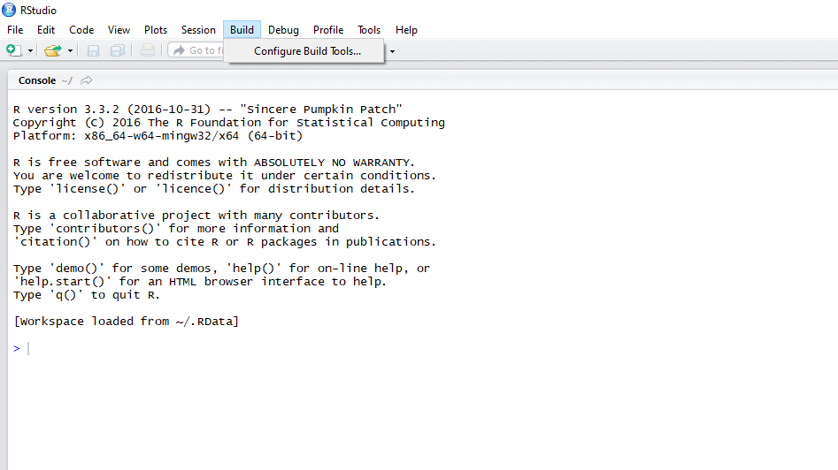
- Debug: diseñado para programación, ya que ayuda a agilizar o depurar código, localizando errores o elementos innecesarios. Destaca la opción Toggle Breakpoints, que al correr el código realiza un punto de parada donde se haya situado, de forma que sea posible la revisión del código ejecutado. Esto también se puede hacer clicando a la izquierda del número de la línea deseada en código ejecutable.
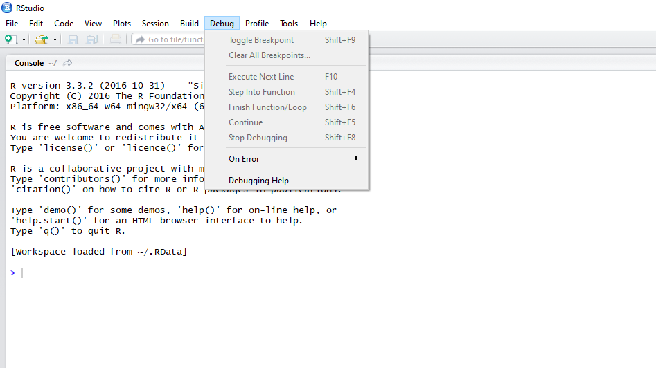
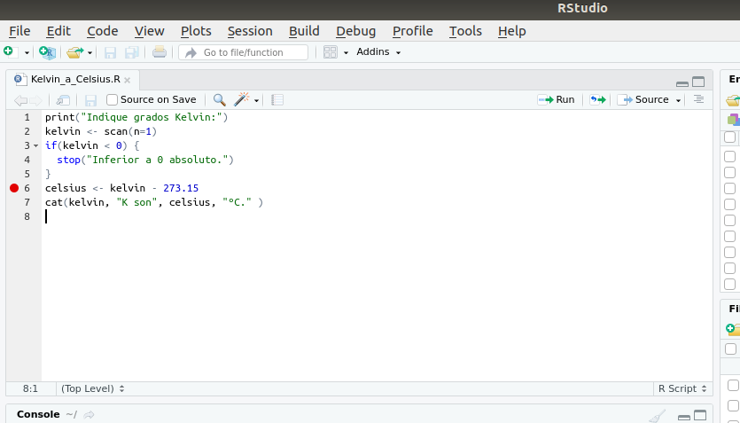
- Profile: encaminado a la optimicación de memoria y velocidad de programas de R.
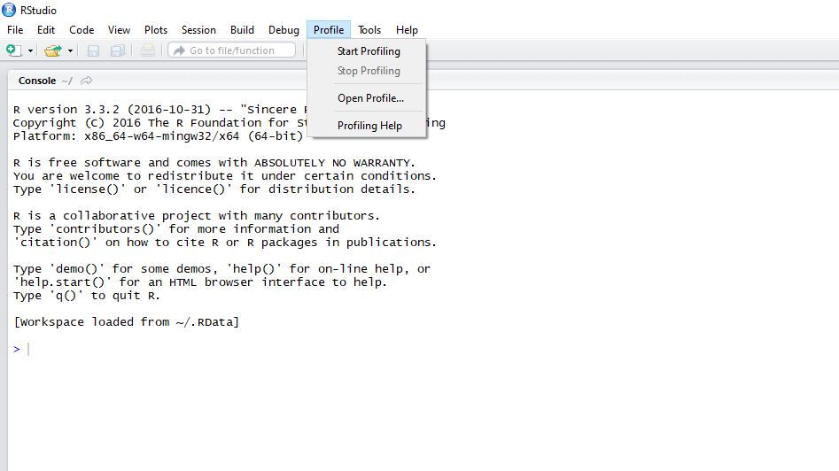
- Tools: ofrece distintas posibilidades como la instalación o actualización de paquetes, acciones sobre el proyecto, configuración de RStudio, lista de combinaciones de teclas y la función correspondiente, abrir el terminal, etc.
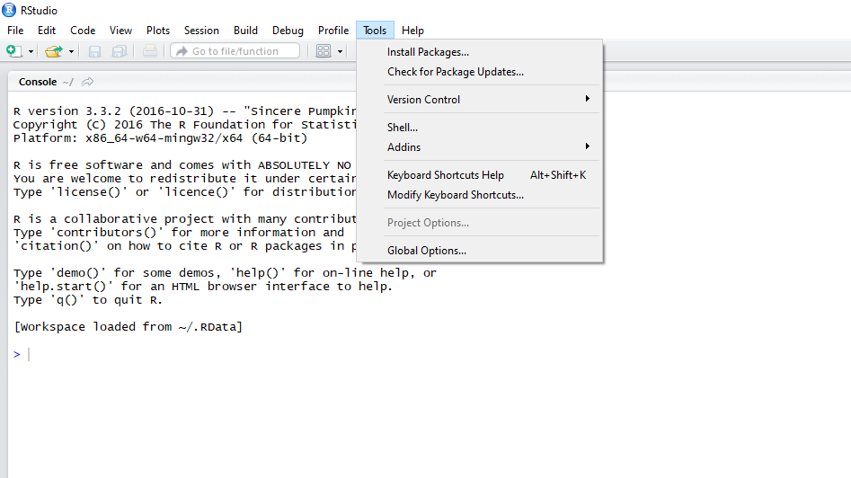
- Help: permite acceder a la documentación de funciones de R o información sobre RStudio.
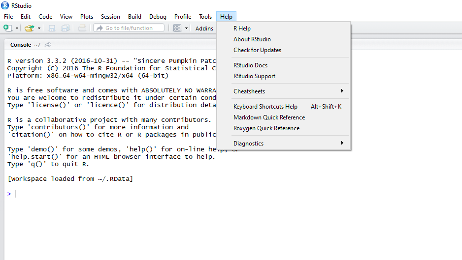
Cuadernos de R¶
Los cuadernos de R son documentos R Markdown interactivos, ya que contienen código ejecutable y comentarios con texto enriquecido. Estos cuadernos son una característica que tiene RStudio que permiten trabajar con el código que se pretende incluir en una publicación de forma directa. El archivo puede ser creado desde File --> New File --> R Notebook de la barra de herramientas general y confiere al estudiante la posibilidad de combinar el código con texto para producir, por ejemplo, un archivo PDF o Doc de Word, mientras practica con el código, de este modo podría incluir explicaciones según avanza en el diseño del programa.
La cabecera del archivo suele tener el siguiente diseño:
1 2 3 4 5 6 7 8 9 | |
Para que aparezca el código R en el documento final es necesario incluir esto:
1 2 3 | |
El código de R que se pretende publicar se inserta del siguiente modo:
1 2 3 | |
El texto que intercalamos con el código R se sitúa fuera de la sentencia anterior y una pincelada básica del formato que se emplea es el siguiente:
- Negrita y cursiva: aquello que se quiere resaltar se sitúa entre los símbolos * y _, siendo doble en caso de negrita.
Ejemplos
1 2 3 4 | |
- La cabecera de las secciones se obtiene con el símbolo #, repitiendo el símbolo si se pretende jerarquizar las secciones.
Ejemplos
1 2 3 | |
Finalmente, la consecución del documento final se logra al pinchar en el botón Knit, donde se puede seleccionar el tipo de documento que se desea obtener. Si bien, el formato PDF requiere tener instalado LaTeX en el sistema.
Ejemplo
1 2 3 4 5 6 7 8 9 10 11 12 13 14 15 16 17 18 19 20 21 22 23 24 25 26 27 28 | |
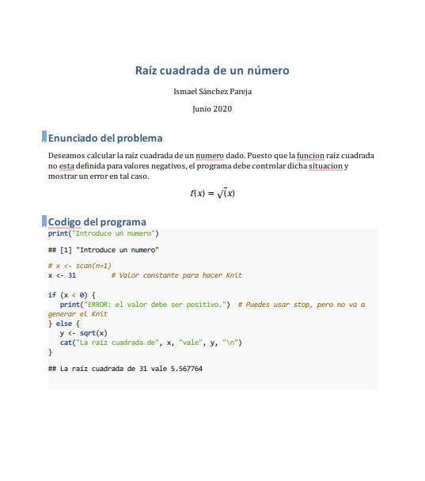
Enlaces de interés
-
Material del curso Informática aplicada a la Bioquímica. Manuel Jesús Marín Jiménez, Universidad de Córdoba.
-
R, RStudio y R-Commander: guía introductoria. Manuel Jesús Marín Jiménez & José Diz Pérez.
-
R Markdown: The Definitive Guide. Yihui Xie, J. J. Allaire, Garrett Grolemund.